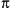

15.1 The math and cmath Modules
The math module
supplies mathematical functions on floating-point numbers, while the
cmath module supplies equivalent functions on
complex numbers. For example, math.sqrt(-1) raises
an exception, but cmath.sqrt(-1) returns
1j.
Each module also exposes two attributes of type
float bound to the values of fundamental
mathematical constants, pi and
e.
Returns the arccosine of x in radians.
Returns the arc hyperbolic cosine of x in
radians.
Returns the arcsine of x in radians.
Returns the arc hyperbolic sine of x in
radians.
Returns the arctangent of x in radians.
Returns the arc hyperbolic tangent of x in
radians.
Like
atan(y/x),
except that when x equals
0, atan2 returns
pi/2, while dividing by
x would raise
ZeroDivisionError.
Returns the lowest integer i such that
i is greater than or equal to
x as a floating-point value.
Returns the cosine of x in radians.
Returns the hyperbolic cosine of x in
radians.
The mathematical constant e.
Returns e**x.
Returns the absolute value of x.
Returns the highest integer i such that
i is less than or equal to
x as a floating-point value.
Returns
x%y
(on most platforms).
Returns a pair
(m,e)
with the mantissa and exponent of x.
m is a floating-point number and
e is an integer such that
x=
=m*(2**e) and
0.5<=abs(m)<1,
except that frexp(0) returns
(0.0,0).
Returns
sqrt(x*x+y*y).
Returns
x*(2**i).
Returns the natural logarithm of x.
Returns the base-10 logarithm of x.
Returns a pair
(f,i)
with fractional and integer parts of x,
each a floating-point value with the same sign as
x.
The mathematical constant .
Returns
x**y.
Returns the sine of x in radians.
Returns the hyperbolic sine of x in
radians.
Returns the square root of x.
Returns the tangent of x in radians.
Returns the hyperbolic tangent of x in
radians.

|